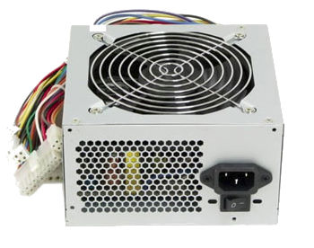

Блок питания компьютера отвечает за бесперебойное снабжение электроэнергией всего системного блока. Выход из строя данного узла полностью обесточивает компьютер и он перестает включаться. Неисправно работающий блок питания компьютера может быть причиной различных "зависаний", ошибок операционной системы и других программ, короче говоря - нестабильного и не прогнозируемого поведения системы в целом
При установленном блоке питания внутри системного блока его вентилятор располагается сразу над процессором и работает на выдув, - происходит дополнительный отвод тепла из зоны центрального процессора и горячий воздух выбрасывается за пределы корпуса компьютера через круглые отверстия на задней стенке блока. Долговечность таких вентиляторов (12 см) также больше именно за счет меньших оборотов и меньшего же износа подшипника.
Одним из признаков качественного блока является его вес. Чем увесистее блок питания компьютера, тем больше внутри него комплектующих. Производитель не сэкономил на количестве фильтрующих конденсаторов, на дросселях, резисторах, полевых транзисторах и не заменил большую их часть перемычками. Опять же, толщина стенок изделия, количество и разнообразие разъемов, возможно, наличие дополнительных переходников в комплекте поставки.
Многие мощные блоки питания сейчас используют модульное подключение кабелей к одноименным разъемам. Чем это удобно? Прежде всего тем, что отпадает необходимость держать неиспользуемые кабели внутри самого системного блока. Это, в свою очередь, способствует меньшей путанице с проводами внутри корпуса (нужный кабель просто добавляется по мере необходимости).Отсутствие лишних кабелей, также улучшает циркуляцию воздуха в корпусе. Обычно в таких блоках питания несъемными остаются только разъемы для питания материнской платы и центрального процессора.
|  |
Качественные блоки питания имеют различные схемы и режимы защиты:
|
|---|